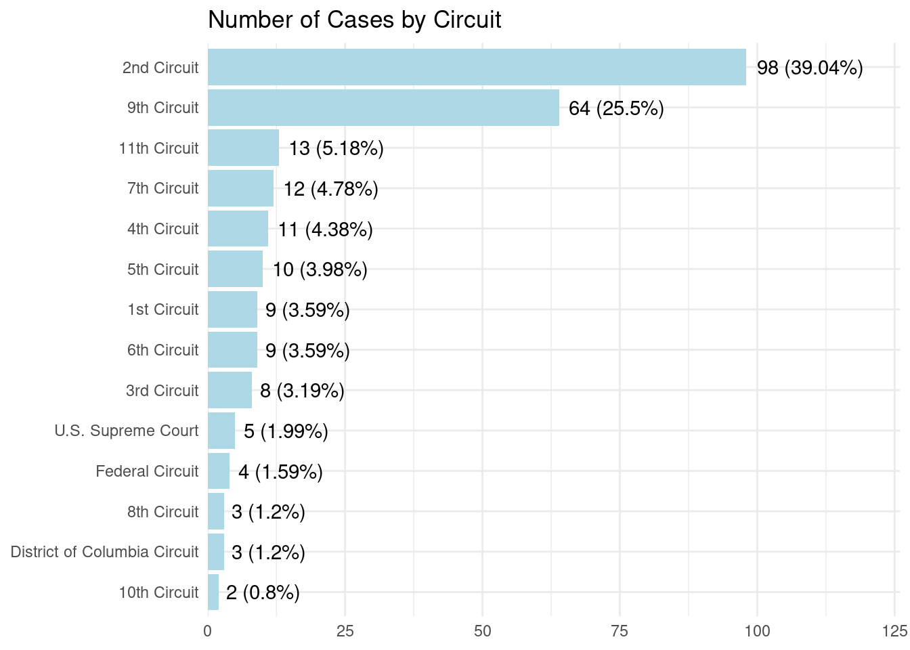
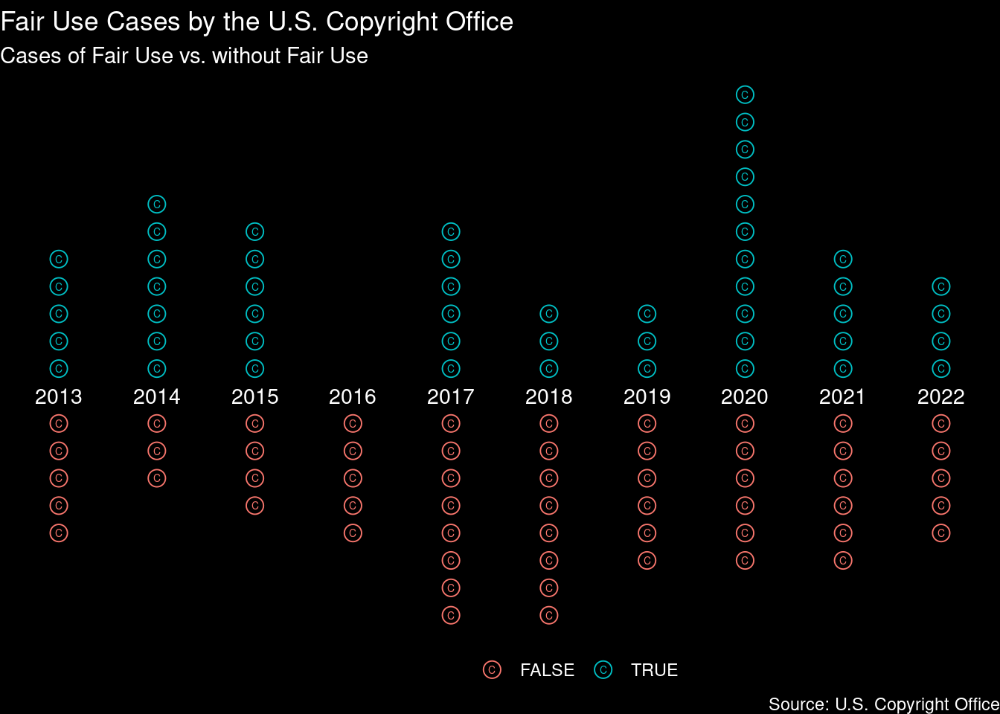
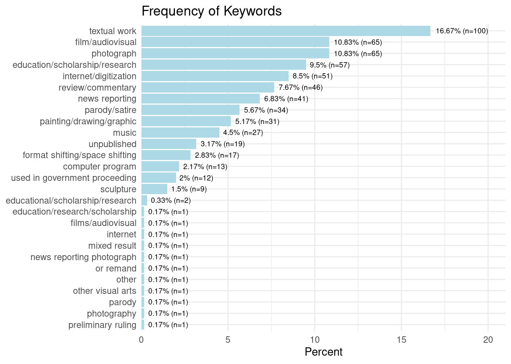

library(dplyr)
library(stringr)
library(stringi)
library(ggplot2)
project_root <- here::here("2023_08_29_fair_use_cases")Fair Use Cases
# read data
fair_use_cases <- read.csv(
paste0(project_root, "/data/fair_use_cases.csv")
) %>% select(-court, -year, -outcome)
fair_use_findings <- read.csv(
paste0(project_root, "/data/fair_use_findings.csv")
)# match the two data sets into one
# and make some data cleaning
fair_use_data <- fair_use_cases %>%
bind_cols(fair_use_findings) %>%
mutate(title = title %>%
str_remove(",$|,\\s+$"),
court_clean = court %>%
str_replace("U\\.S\\.", "United States") %>%
str_to_lower(),
year = str_extract(year, "^[0-9]+")) %>%
# mutate(across(where(is.character), str_to_lower)) %>%
select(case, title, case_number, court, jurisdiction, year, everything())
str(fair_use_data)'data.frame': 251 obs. of 14 variables:
$ case : chr "De Fontbrune v. Wofsy, 39 F.4th 1214 (9th Cir. 2022)" "Sedlik v. Von Drachenberg, No. CV 21-1102 (C.D. Cal. May 31, 2022)" "Sketchworks Indus. Strength Comedy, Inc. v. Jacobs, No. 19-CV-7470-LTS-VF (S.D.N.Y. May 12, 2022)" "Am. Soc'y for Testing & Materials v. Public.Resource.Org, Inc., No. 13-cv-1215 (D.D.C. Mar. 31, 2022)" ...
$ title : chr "De Fontbrune v. Wofsy" "Sedlik v. Von Drachenberg" "Sketchworks Indus. Strength Comedy, Inc. v. Jacobs" "Am. Soc'y for Testing & Materials v. Public.Resource.Org, Inc." ...
$ case_number : chr "39 F.4th 1214 (9th Cir. 2022)" "No. CV 21-1102, 2022 WL 2784818 (C.D. Cal. May 31, 2022)" "No. 19-CV-7470-LTS-VF, 2022 U.S. Dist. LEXIS 86331 (S.D.N.Y. May 12, 2022)" "No. 13-cv-1215 (TSC), 2022 U.S. Dist. LEXIS 60922 (D.D.C. Mar. 31, 2022)" ...
$ court : chr "United States Court of Appeals for the Ninth Circuit" "United States District Court for the Southern District of New York" "United States District Court for the Southern District of New York" "United States District Court for the District of Columbia" ...
$ jurisdiction : chr "9th Circuit" "9th Circuit" "2nd Circuit" "District of Columbia Circuit" ...
$ year : chr "2022" "2022" "2022" "2022" ...
$ categories : chr "Education/Scholarship/Research; Photograph" "Painting/Drawing/Graphic; Photograph" "Film/Audiovisual; Music; Parody/Satire; Review/Commentary" "Education/Scholarship/Research; Textual Work; Used in government proceeding" ...
$ fair_use_found: logi FALSE FALSE TRUE FALSE TRUE FALSE ...
$ key_facts : chr "Plaintiffs own the rights to a catalogue comprised of 16,000 photographs of Pablo Picasso’s work, which was ori"| __truncated__ "Plaintiff Jeffrey Sedlik is a photographer who created an iconic portrait of musician Miles Davis, which he has"| __truncated__ "Plaintiff Sketchworks Industrial Strength Comedy, Inc. (“Sketchworks”) is a sketch comedy company that created "| __truncated__ "Defendant Public.Resource.Org, Inc., a non-profit organization, has a mission to make the “law and other govern"| __truncated__ ...
$ issue : chr "Whether reproduction of photographs documenting artwork in a reference book that was sold commercially is a fair use." "Whether use of a photograph as the reference image for a realistic tattoo is fair use." "Whether the use of protected elements, including music, plot, characters, dialogue, and setting, from a theatri"| __truncated__ "Whether it is fair use to make available online for free a verbatim copy of privately developed standards, whic"| __truncated__ ...
$ holding : chr "The panel held that the first factor, the purpose and character of the use, weighed against fair use because De"| __truncated__ "Considering the first fair use factor, the purpose and character of the use, the court found triable issues as "| __truncated__ "The court found that the first factor, the purpose and character of the use, favored fair use because Vape is a"| __truncated__ "As directed by the court of appeals, the district court conducted a four-step fair use analysis for each of the"| __truncated__ ...
$ tags : chr "Education/Scholarship/Research; Photograph" "Painting/Drawing/Graphic; Photograph" "Film/Audiovisual; Music; Parody/Satire; Review/Commentary" "Education/Scholarship/Research; Textual Work; Used in government proceeding" ...
$ outcome : chr "Fair use not found" "Preliminary finding; Fair use not found" "Fair use found" "Mixed Result" ...
$ court_clean : chr "united states court of appeals for the ninth circuit" "united states district court for the southern district of new york" "united states district court for the southern district of new york" "united states district court for the district of columbia" ...# evaluate frequency of jurisdiction
fair_use_data %>%
group_by(jurisdiction) %>%
count() %>%
arrange(desc(n)) %>%
ungroup() %>%
mutate(perc = n/sum(n)*100,
label = paste0(n, " (", round(perc, 2), "%)"),
jurisdiction = factor(.$jurisdiction, levels = rev(as.character(.$jurisdiction)))) %>%
ggplot(aes(x = jurisdiction, y = n, label = label)) +
geom_col(fill = "lightblue") +
geom_text(hjust = -.1) +
scale_y_continuous(limits = c(0,126), expand = c(0,0)) +
ggtitle("Number of Cases by Circuit") +
coord_flip() +
theme_minimal() +
theme(axis.title = element_blank())
fair_use_data %>%
mutate(jurisdiction = factor(jurisdiction)) %>%
group_by(jurisdiction, fair_use_found) %>%
count() %>%
group_by(jurisdiction) %>%
mutate(perc = n/sum(n)*100) %>%
ungroup() %>%
tidyr::complete(jurisdiction, fair_use_found,
fill = list(n=0, perc=0)) %>%
arrange(jurisdiction, fair_use_found)# A tibble: 28 × 4
jurisdiction fair_use_found n perc
<fct> <lgl> <int> <dbl>
1 10th Circuit FALSE 2 100
2 10th Circuit TRUE 0 0
3 11th Circuit FALSE 10 76.9
4 11th Circuit TRUE 3 23.1
5 1st Circuit FALSE 7 77.8
6 1st Circuit TRUE 2 22.2
7 2nd Circuit FALSE 59 60.2
8 2nd Circuit TRUE 39 39.8
9 3rd Circuit FALSE 5 62.5
10 3rd Circuit TRUE 3 37.5
# ℹ 18 more rowsplot_labels <- fair_use_data %>%
filter(year >= 2013) %>%
select(year) %>%
unique() %>%
tibble() %>%
arrange(year)
fair_use_data %>%
filter(year >= 2013) %>%
# mutate(year = factor(year)) %>%
group_by(year, fair_use_found) %>%
count() %>%
ungroup() %>%
arrange(year, fair_use_found) %>%
apply(., 1, function(x){
tibble(year = x[1],
fair_use_found = rep(x[2], x[3]),
point_count = 1:x[3])
}) %>%
do.call(rbind, .) %>%
mutate(point_count = if_else(fair_use_found %in% T, point_count, point_count*-1)) %>%
ggplot(aes(x = year, y = point_count, color = fair_use_found, label = year)) +
geom_point(shape = "C") +
geom_point(shape = 1, size = 3.75) +
geom_text(data = plot_labels, aes(x = year, y = 0), color = "white", size = 3.75) +
labs(title = "Fair Use Cases by the U.S. Copyright Office",
subtitle = "Cases of Fair Use vs. without Fair Use",
caption = "Source: U.S. Copyright Office") +
theme_void() +
theme(legend.position = "bottom",
plot.background = element_rect(fill = "black"),
plot.title = element_text(colour = "white"),
plot.subtitle = element_text(colour = "white"),
plot.caption = element_text(colour = "white"),
legend.text = element_text(color = "white"),
legend.title = element_text())
# make a new list column 'keywords' with
# unique values from 'categories' ans 'tags'
fair_use_data <- fair_use_data %>%
mutate(
keywords = apply(.[c("categories", "tags")], 1, function(x){
x %>%
str_split(";|,") %>%
unlist() %>%
str_replace_all("\\s+|\\.$", " ") %>%
str_trim() %>%
unique() %>%
str_to_lower() %>%
stri_subset_regex("^[:alnum:]+")
}),
) %>%
mutate(
keywords_clean = lapply(.$keywords, function(x){
x[!grepl("circuit|court", x)]
})
)
head(fair_use_data$keywords, 3)[[1]]
[1] "education/scholarship/research" "photograph"
[[2]]
[1] "painting/drawing/graphic" "photograph"
[[3]]
[1] "film/audiovisual" "music" "parody/satire"
[4] "review/commentary"# evaluate overall frequency of keywords
fair_use_data["keywords_clean"] %>%
unlist() %>%
table() %>%
data.frame() %>%
rename("keyword" = 1) %>%
arrange(desc(Freq)) %>%
mutate(Perc = Freq / sum(Freq) * 100,
label = paste0(round(Perc, 2), "% (n=", Freq, ")"),
keyword = factor(as.character(.$keyword),
levels = rev(as.character(.$keyword)))) %>%
ggplot(aes(x = keyword, y = Perc, label = label)) +
geom_col(fill = "lightblue") +
geom_text(hjust = -.1, size = 2.5) +
scale_y_continuous(limits = c(0,21), expand = c(0,0)) +
ylab("Percent") +
ggtitle("Frequency of Keywords") +
coord_flip() +
theme_minimal() +
theme(axis.title.y = element_blank())
jur_subsets <- apply(fair_use_data[c("jurisdiction", "keywords_clean")], 1, function(x){
data.frame(x[1], x[2])
}) %>%
do.call(rbind, .) %>%
split(., ~.$jurisdiction) %>%
lapply(., function(x){
x %>%
group_by(jurisdiction, keywords_clean) %>%
count() %>%
ungroup() %>%
arrange(desc(n))
})
names(jur_subsets) [1] "10th Circuit" "11th Circuit"
[3] "1st Circuit" "2nd Circuit"
[5] "3rd Circuit" "4th Circuit"
[7] "5th Circuit" "6th Circuit"
[9] "7th Circuit" "8th Circuit"
[11] "9th Circuit" "District of Columbia Circuit"
[13] "Federal Circuit" "U.S. Supreme Court" # split 'title' into claimant and defendend
# and recode these values into two new columns
split_value <- "\\s[Vv]\\.|\\sto\\s"
fair_use_data <- fair_use_data %>%
bind_cols(
apply(fair_use_data["title"], 1, function(x){
if(grepl(split_value, x)){
x <- x %>%
str_split(split_value, n = 2) %>%
unlist() %>%
str_trim()
}else{
x <- x %>%
str_split(",", n = 2) %>%
unlist() %>%
str_trim()
}
data.frame(claimant = x[1],
defendend = x[2])
}) %>%
do.call(rbind, .)
) %>%
mutate(claimant_clean = claimant %>%
str_to_lower() %>%
str_remove_all("[^[:alnum:]]"),
defendend_clean = defendend %>%
str_to_lower() %>%
str_remove_all("[^[:alnum:]]"))# save data
save("fair_use_data", file = "fair_use_data.Rdata")